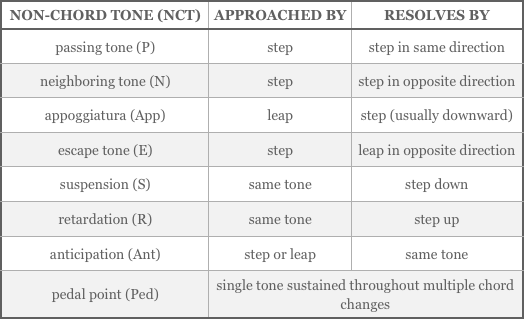

-
Chapter 13
Voice-Leading
Though we have been speaking of
harmony as if it were separate from
melody, historically chords arose as the result of several voices singing different melodies together. In this chapter we
will consider harmony not as a series
of chords, but as several lines of melody
that form chords between them as
they move.Johannes Fux’s Gradus ad Parnassum (1725) provided a
step-by-step method for mastering the art of counterpoint. -
187
Section 1
Musical Textures
The texture Texture The fabric of a composition as defined by the number
of voices (vocal or instrumental) sounding and how they interact. A single-voiced composition has a monophonic texture. Homophony and polyphony are both multi-voice musical textures. A greater independence of voices distinguishes polyphony from homophony. In the case
of homophony, one melodic line is supported by accompanying harmony. A polyphonic texture is contrapuntal – two or more melodic lines, each rhythmically independent, combined to create a
series of chords.
There are also coloristic factors that affect the musical texture of a piece such as the orchestration, which includes the choice of instruments and how they are blended together. of a composition has to do with the number of voices sounding together and how those voices interact with each other (the term voice refers to either a single vocal or single instrumental part). An unaccompanied melody is said
to be monophonic Monophonic A single, unaccompanied melodic line. Gregorian chant, for instance, is monophonic. in texture. When multiple melodies combine to create harmonies that move with the same rhythm the resulting texture is homophony Homophony A multi-voice texture exemplified by popular song in which a lead melodic line is supported by chordal accompaniment. Homophony is also found in hymns in which all voices move in the same rhythm. . Homophonic texture
is familiar from popular song, where a series of chords accompanies a melody, and from the simpler type of hymns
in which all voices move at once. If the rhythms of each
part differ, the result is a more complex texture known
as polyphony Polyphony A multi-voice texture characterized by two or more melodic lines, each rhythmically independent, combined to create a series of chords. , perhaps the most sophisticated of
musical arts.Experience has taught that satisfying results in either homophony or polyphony are obtained when each of
the component melodies is graceful in itself and also
cooperates with the other voices without losing a sense
of independence. The art of shaping melodic lines to
cooperate in this way is what we study as the art of
voice-leading Voice-leading The art of arranging each voice of a chord so that it moves gracefully from one chord to the next. Different eras and musical styles call for different voice-leading “rules.” Composers of the common practice period followed certain voice-leading principles that determine the resolution of dissonance, the relative motion of voices, and an economy of motion. or counterpoint Counterpoint The art of combining two or more melodic lines so
that they harmonize with each other without losing their melodic or rhythmic independence. The term, counterpoint, comes from the Latin punctus contra punctum, meaning “point (note) against point.” .Four-Part Harmony
A familiar model for practicing the art of voice-leading
is the vocal quartet of soprano, alto, tenor, and bass,abbreviated as SATB. Chorales for vocal quartet are often scored like keyboard music on two staves as in Movie 13.1,
with different stem directions distinguishing the voices.J.S. Bach’s chorale harmonizations are models of 4-part
vocal writing. These occupy a middle ground between homophony and polyphony: the 4 voices are not really
equal since the soprano voice has the chorale melody, and
the other voices sometimes move with the same rhythm. However, each voice is designed to work melodically on its own, so that what might look like a series of chords is really four melodies in combination, each carefully shaped to work with the others. This example is from Bach’s chorale setting
of Herzlich lieb hab ich dich, o Herr.Movie 13.1 A Bach chorale in keyboard reduction
188
The chords formed by the voices of this chorale are easier to recognize if the nonharmonic tones are removed. Movie 13.2 shows the chorale as it would appear without any nonharmonic tones.
You can see how the chords are formed from the movement of the four voices of melody. But, at the same time, each of the individual voices is a singable line that, especially with the added nonharmonic tones, follows the rules of melody writing discussed earlier.
You might have some difficulty discerning the melody of the inner voices. In Movie 13.3 we’ve turned up the volume on the alto and tenor parts so you can follow the movement of each of these melodies. You’ll hear the alto voice first and then the tenor.
Movie 13.2 Extracting chords from the chorale
Movie 13.3 Melodic inner voices
189
Even keyboard music in the tonal style can be reduced to the underlying chords, though the movement of individual “voices” may not be so clear. However, what voices there are will often make singable lines. This Mozart example is like popular song
in that its texture is essentially homophonic with a dominant melody. Each beat of the accompaniment pattern in the bass clef is made up of three chord tones, or three voices. Add the melody in the upper staff and we again have four melodic voices underlying the piece, and each makes a singable line.Movie 13.4 Underlying four-part harmony in Mozart’s Piano Sonata K. 545
Review 13.1
1. The texture of a composition is defined in part
by how many voices are sounding and how the
voices interact with each other.2. An unaccompanied melody has a monophonic texture.
3. Homophony and polyphony are multi-voice textures. Popular songs in which a lead melody
is supported by a chordal accompaniment are homophonic in texture. Homophony is also found
in hymns in which all voices move in the same rhythm.4. Polyphonic music is characterized by two or
more melodic lines, each rhythmically and melodic independent, yet working together in a meaningful way.5. Voice-leading or counterpoint is the art of
arranging each voice of a composition so that it works gracefully with the others yet retains a
sense of independence.190
Section 2
Principles Of Voice-Leading
Successful voice-leading in tonal music depends on three things:
• a singable melody for each voice
• sufficient independence for each voice
• resolution of any dissonances formed between the voicesSingable melodies tend to be relatively smooth, so the first thing
we’ll look for is melody that is economical with its leaps.Economy Of Motion
Try to minimize the movement in each voice, particularly when changing harmony. For example, if the new chord has notes in common with the preceding one, then perhaps those notes should be repeated
in the same voice. Perhaps you can arrange things so that none of the voices needs to move more than a second in order to reach the notes of the new harmony, as in Movie 13.5. The principle of economy of motion, which helps to achieve smooth and connected melodic lines, is one that is valid in modern jazz and pop as well as in the classical style.Independence Of Voices
The relative motion Relative Motion Describes how two voices move in relation to one another. The relative motion of a pair of voices can be parallel or similar, contrary, or oblique. Contrary and oblique
motion produce the greatest sense of independence between voices; parallel motion produces the least. Parallel motion of the perfect intervals is avoided in music of the common practice period, except in the case
of parallel fourths when both notes
of the interval are upper voices. of a pair of voices can be similar, parallel, contrary, or oblique. The types of motion that produce the greatest sense of independence are, of course, contrary and oblique motion,
and then similar motion.Movie 13.6 Types of motion
Movie 13.5 Voicing for economy of motion
191
Parallel motion is frequently
used in harmony, but mostly
using the weaker imperfect consonant intervals like the
third and sixth, as shown
at right.Parallel motion of the strong
perfect intervals of the fifth or
the octave is avoided in traditional writing for several parts because it seems to reduce the independence of voices: the parallel
parts can give the impression of being one voice with a brassy tone quality. Perfect fourths are not as strong as fifths and octaves
and are treated differently. They are sometimes written in parallel if neither voice is the bass and if they are combined with thirds
or sixths as shown in Movie 13.9.Avoidance of parallel perfect intervals is a matter of style – their sound is appropriate when produced by choice. But if you want
to create a genuinely polyphonic texture then avoiding parallel fifths and octaves is a valuable skill.Movie 13.7 Parallel motion of imperfect consonances
Movie 13.9 Acceptable parallel fourths
Movie 13.8 Undesirable parallel perfect consonances
Red lines = parallel octaves Blue lines = parallel fifths
192
Resolving Dissonance
A composition would be a dull thing if it contained only consonant harmonies. Most pieces employ frequent dissonances. In the tonal harmony we are studying, however, close attention is paid to how dissonances are approached and how they are resolved to a consonance. For our purposes it
will be enough to state just two basic principles for handling dissonances:
• A dissonance should be resolved to a consonance before proceeding to another dissonance (don’t write two dissonant notes one after the other).
• A dissonance is usually approached by step and almost always is resolved by step. Sometimes it can be approached by leap,
if it’s resolved by step in the opposite direction.Most dissonances that you will encounter in tonal music are treated according to these principles. All of the dissonant notes in the Bach chorale viewed at the beginning of this chapter,
for example, are approached by step and then immediately resolved by step. Here’s that example again, this time with the dissonant notes circled (we have not marked all nonharmonic tones – just the dissonances). All but one of the dissonances occur in rhythmically weak (unaccented or offbeat) positions. Only one dissonance occurs on a beat, the F sharp on the weakest beat of the second full measure. The distinction between accented and unaccented dissonances is useful because you will need to be more strict in the treatment of accented dissonances. Unaccented dissonances will occasionally leap to
a resolution but accented ones almost always resolve by step.Movie 13.10 Dissonances in the Bach chorale
193
Review 13.2
1. Successful voice-leading depends on:
• a good melody for each voice
• sufficient independence for each voice
• resolution of any dissonances formed between
the voices2. Voice-leading benefits from economy of motion – the movement between voices should be minimized. The most economical movement in each voice would be to the nearest following chord tone when that’s possible.
3. The relative motion of a pair of voices can be parallel or similar, contrary or oblique. Contrary and oblique motion produce the greatest sense of independence between voices.
4. Parallel motion at the perfect fifth and octave
should be avoided in the tonal style. Parallel thirds and sixths, however, are frequently used.5. Parallel fourths are acceptable if they don’t involve the bass and are combined with thirds or sixths.
6. General rules for dissonances:
• A dissonance should be resolved to a consonance before proceeding to another dissonance.
• A dissonance is usually approached by step
and almost always is resolved by step. Sometimes
it can be approached by leap, if it’s resolved by
step in the opposite direction.194
Section 3
Nonharmonic Tones
The dissonances mentioned above and in Chapter 10 are also called nonharmonic or non-chord tones (NCTs), because they’re
not part of the intended harmony. They can smooth the movement from one chord to another or add a little dissonant interest
before resolving to a chord tone. Depending on how they are approached and resolved and whether they are in a strong position rhythmically or not, they can be classified into several common types found in both classical and popular music. Knowing these typical ways of handling nonharmonic tones will help you to write gracefully when composing both accompanied melody and
music in several parts, and it will also help you as a listener. These classifications apply in general to any decorative tones that
are not part of the current chord, dissonant or not, but they are essentially techniques for handling dissonance.The Passing Tone
When a melodic line moving stepwise departs just briefly from the harmony to “pass through” a dissonant or nonharmonic pitch,
we call it a passing tone Passing Tone The most common type of nonharmonic tone. It’s approached
by step and resolved by a step in the same direction, filling in the space between two tones to make a smooth line. It can be accented or unaccented. . A passing tone resolves by moving stepwise in the same direction it came from. In these examples dissonant passing tones are circled, and the notes that follow them are the consonant notes that resolve the dissonance.Notice that some of these are “accented” and some are not. That’s
a reference to a metric accent – it doesn’t mean the note is played louder, but that it’s in a rhythmically strong position, such as the
first of a pair of notes that begin on a beat.Passing tones are by far the most common type of dissonance.
If you look again at the Bach chorale in Movie 13.10, you’ll see that every dissonance in it can be described as a passing tone, even the
F♯ in the last chord of measure two.Movie 13.11
Passing tones make a smooth melodic line by filling in the space between two tones.195
The Neighboring Tone
The neighboring tone Neighboring Tone A nonharmonic tone (also called an auxiliary tone) that’s approached by step and resolved by a step in the opposite direction. There are upper or lower neighbors, either accented or unaccented. The lower neighboring tone is the more common of the two. (also called the auxiliary tone) is like a passing tone, but it comes back to where it started instead of continuing up or down the scale. If it goes up and comes down, it’s an upper neighboring tone. If it goes down and comes back up,
it’s a lower neighboring tone. The lower neighboring tone is more common.Like passing tones, neighboring tones can be accented or unaccented:
Movie 13.12 Neighboring Tones
(Bach’s Brandenburg Concerto No. 3)Movie 13.13 Accented and unaccented neighboring tones
(“Dido’s Lament” from Purcell’s Dido and Aeneas)196
The Appoggiatura
The appoggiatura Appoggiatura An accented dissonance that’s approached by leap (usually upward) and resolved by a step (usually downward). is an accented dissonance that is approached by leap and which then moves by step to a consonant interval. The leap is usually upwards and the resolution usually downwards. Notice the difference between the accented passing tone and the appoggiatura in the music example.
Movie 13.14 The appoggiatura (Kuhlau, Piano Sonata op. 20 no.1)
Movie 13.15 The escape (Bach, Ach Gott Und Herr)
The Escape
This relatively rare device is the opposite of an appoggiatura:
the escape Escape A relatively rare dissonance that is unaccented, approached by step and resolved by a leap. is unaccented, approaches by step, and resolves by leap. In this example, the soprano voice resolves downward
by a leap of a third.197
The Suspension
In the suspension Suspension A harmonic tone that is held or repeated to become a nonharmonic tone, or dissonance, with the following chord change. Like the appoggiatura, the dissonance occurs on an accented beat and its resolution is usually downward by step. Suspensions are sometimes repeated in sequence to form a chain of suspensions. a harmonic tone is held or repeated to become a dissonance with the following chord change. Like the appoggiatura, the dissonance occurs on an accented beat and its resolution is downward by step. In Movie 13.16 the G in measure
two becomes dissonant on the first beat of the following measure and resolves down to a consonant F, which becomes dissonant
at the following downbeat, and so on, forming, in this case, a chain of suspensions.Movie 13.16 Chain of suspensions
(Variation 8 from Mozart’s Twelve Variations on “Ah, vous dirai-je, Maman”)Movie 13.17 The retardation
Haydn, Sonata No. 48 in C MajorThe Retardation
Retardation Retardation A chord tone that is either held or repeated forming
an accented dissonance with the following chord change. Retardation is very much like a suspension except that
the dissonance resolves upward instead of downward.
It appears frequently in cadences. is very much like a suspension except that the dissonance resolves upward instead of downward. It appears frequently in cadences as shown in the Haydn example at right. The F♯ is introduced as a chord tone, then sounds as an accented dissonance in the last measure before resolving upward to G.198
The Anticipation
The anticipation Anticipation A nonharmonic tone that anticipates
a chord change in the other voices.
The anticipation is approached by step or leap and resolves when it becomes consonant with the anticipated chord change. is a nonharmonic tone that anticipates a chord change in the other voices. It’s approached by step or leap and resolved when the other voices “catch up” harmonically.The Pedal Point
Named after the pedal tones of an organ, pedal point Pedal Point A sustained or repeated tone that begins as a chord tone (usually in the bass) and becomes dissonant as the other parts move. It is sustained until it once again becomes consonant with the other voices. refers to a sustained or repeated note that becomes dissonant as the other parts move. It’s usually a bass note, but can occur in other voices.
Movie 13.18 The anticipation
Haydn, Sonata No. 48 in C MajorMovie 13.19 The pedal point (Bach, Prelude No. 1 in C Major from The Well-Tempered Clavier)
Suggested Practica Musica Activities 13.1
• Nonharmonic Tones: Label nonharmonic tones in each music example.

199
Bach chorales are rich sources for illustrations of voice-leading practice. This one, Herzlich thut mich verlangen, includes two suspensions of the
repeated-note type, which are in
the alto voice on beat four of the first measure and beat one of the second.Notice in both chorale examples how Bach is careful to avoid parallel fifths
or octaves. You can examine his work
by finding every fifth or octave in the harmony and then checking the relative motion of the voices as they move to the following interval. The motion is almost always contrary or oblique, as in the first two beats of this chorale.Movie 13.20 J.S. Bach: Herzlich thut mich verlangen
Figure 13.2 Table of Non-Chord Tones
Figure 13.1 Avoiding parallel fifths and octaves
200
Writing In The Chorale Style
The starting chords in Movie 13.21 are moving in parallel, and so the harmony is full of parallel fifths and octaves. It would be better if each of the parts had some degree of independence, which we can obtain by revoicing the chords (rearranging their notes).
However, we’ve still used only the same notes that we started with,
all of which form consonant harmonies. A few dissonances would add
both interest and movement. In places where a voice leaps by a third
we could insert passing tones, as shown at right. A suspension would
add a little drama to the penultimate chord. The C in the tenor voice
is one step above a chord tone for beat three; we’ll tie it over onto
the beat and resolve it downward to the chord tone (Movie 13.22).Simple as it is, this four measure composition is certainly a great
advance over the plain chords we began with! And though it’s written
in a style modeled after that of Bach, the voice-leading
principles involved are also found in other types of music.Movie 13.21 Chords revoiced for independence
Movie 13.22 Adding dissonances
Suggested Practica Musica Activities 13.2
• Realizing Roman Numerals: Improve your voice-leading skills.
• Chorale Writing: Practice in writing four-part harmony.

201
The avoidance of parallel perfect intervals is mostly important for music that has a set number of voices, such as vocal music or music for several melody instruments. But even in classical piano music we can often see some evidence of the voice-leading principles, as in this example from Mozart, the same sonata that was quoted at the beginning of the chapter. The dissonances in these three measures are a little harder to recognize than those of the Bach because the Alberti bass breaks up the chords; in Movie 13.23 the lower staff is a reduction of the harmonies in the Alberti bass.
Most of the dissonance in this excerpt is in measure two. The F in the first chord of measure two is an accented neighboring tone that resolves by downward step to an E in the second chord of that measure. The D beneath it could also be called an accented neighboring tone if we consider this fourth to be dissonant, as Mozart probably did (the fourth is considered dissonant if one of its notes is the bass). The C in the right hand (upper voice) is also a dissonance in that G major triad, but it’s a passing tone that resolves by step to
a consonant D. The F on the first beat of the third measure is another technically-dissonant fourth that resolves downward by step.Though the music of Bach and Mozart seems most of the time to “follow the rules” of dissonance handling and voice leading, that’s not to say that either composer was restricted in any way. Both composers learned various rules as the means of writing what they wanted to write. Neither would have considered these rules to be an infringement of his freedom – the rules were, and are, just a
way to achieve a desired result.Movie 13.23 Mozart Sonata K. 545 with a reduction of the Alberti bass
202
Review 13.3
1. Nonharmonic, or non-chord tones, are tones that are not part of the intended harmony. In addition to providing harmonic interest, nonharmonic tones are often important melodically. Nonharmonic tones sometimes serve to smooth the connection between chords.
2. The various types of nonharmonic tones are classified by:
• how they are approached
• how they resolve
• whether they fall on a strong or weak beat
(accented or unaccented)3. A passing tone is approached by step and resolved by
a step in the same direction – in other words, it will fill
in the space between two tones that are a third apart.
It can be accented or unaccented.4. A neighboring tone is approached by step and resolved by a step in the opposite direction. There are upper or lower neighbors, either accented or unaccented.
5. The appoggiatura is an accented dissonance approached by leap (usually upward) and resolved
by a step (usually downward).6. The escape is unaccented, approached by step and resolved by a leap.
7. A harmonic tone that is held or repeated to become a dissonance with the following chord change is called a suspension. The dissonance occurs on an accented beat and its resolution is downward by step. Suspensions
are sometimes repeated in sequence to form a chain
of suspensions.8. Retardation is very much like a suspension except that the dissonance resolves upward instead of downward.
It appears frequently in cadences.9. An anticipation tone anticipates a chord change in
the other voices. It’s approached by step or leap and resolves when the other voices “catch up” harmonically.10. A pedal point is a sustained or repeated tone that
begins as a chord tone (usually in the bass) and becomes dissonant as the other parts move. It’s sustained until it once again becomes consonant with the other voices.